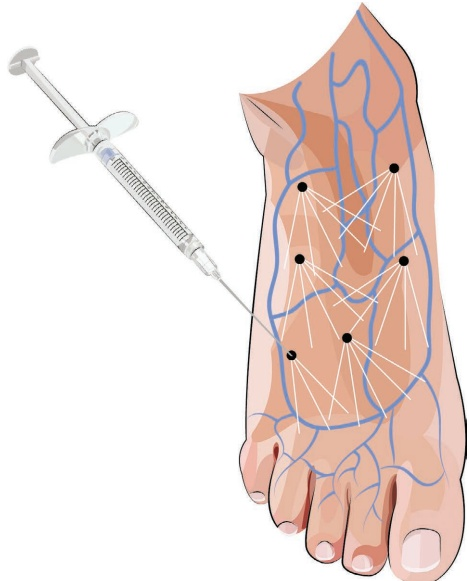
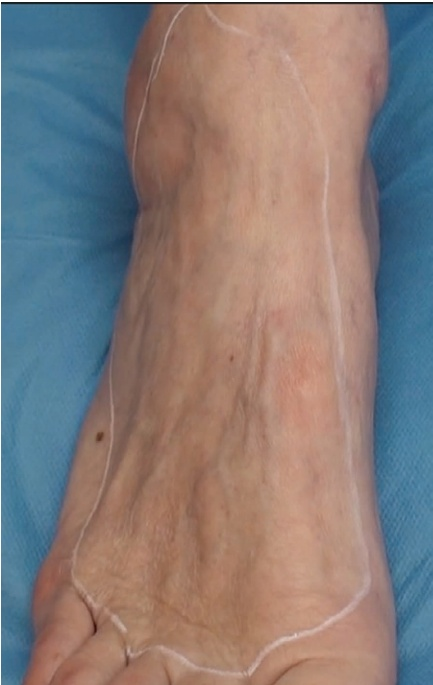
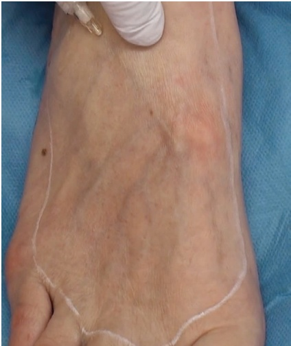
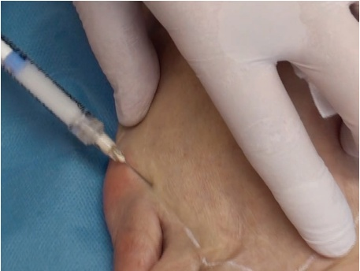

38 四肢：足部再年轻化
足部再活力化
38.1 引言
人体足部可能是身体最复杂的部分之一。它包含26块骨骼；33个关节；以及超过100条肌腱、肌肉和韧带。足部负责运动，并确保身体重量能稳定地分布在双腿上。皮肤保护内部结构免受损伤和感染。由于衰老引起的结构萎缩会导致体积减小，主要是肌肉和脂肪的体积减少，进而导致皮肤松弛以及静脉、肌腱和骨骼更为突出。这种“骨架样”的外观被认为在美学上不理想，使用羟基磷灰石钙（CaHA）进行治疗可以通过增加皮肤厚度和减少血管可见度，使外观恢复平滑、有弹性、焕然一新（图38.1）。
38.2 解剖学危险点
当注射到正确的解剖层次，即真皮和浅筋膜之间时，并发症的风险非常低。然而，静脉附着于浅筋膜，因此为避免大面积瘀伤，应注意避开这些区域。
38.3 足部再活力化钝性套管针技术（Cannula Technique）注射定位请参见图38.1
38.3.1 分步技术
-
对足部进行消毒。
-
标记治疗区域（图38.2）。
-
对入点进行麻醉，并使用合适的锐针预刺孔（用于25G钝性套管针的为23G锐针；用于22G钝性套管针的为50 mm或21G锐针）。
-
将CaHA按1:3稀释；每只足部需要总计1–1.5份注射器。
-
注射应在皮下进行。保持在浅筋膜和血管之上。在该位置注射CaHa可以减少静脉的可见度（图38.3）。
-
使用扇形技术，以0.05–0.1 mL/线束的逆行方式进行注射。

图38.1 使用钝性套管针在足背进行稀释的CaHA注射。黑色点表示入点，而白色线表示真皮-真皮下交界处的稀释CaHA逆行线性线束。应注意避免触及静脉系统（蓝色血管化）。
- 重复操作，直到标记的治疗区域完全处理完毕。从足背外侧部分接近钝性套管针，并将其推进至足背中央，以便更容易进针和更优化地控制钝性套管针在正确的解剖平面内。进行皮下剥离（Hydrodissection）可以分离真皮和筋膜，从而避免无意中注射和损伤血管（图38.4）。

图 38.2 标记足背的治疗区域。

图 38.3 重要的是要位于浅筋膜上方，以避免损伤血管和下方的结构（骨骼、关节、韧带等）。此外，它还能覆盖静脉，从而获得更美观的结果。

图 38.4 外侧入路有助于更好地控制钝性套管针，使其停留在正确的解剖层次。
38.4 术后护理
当患者穿着袜子时，需覆盖注射点以预防感染。